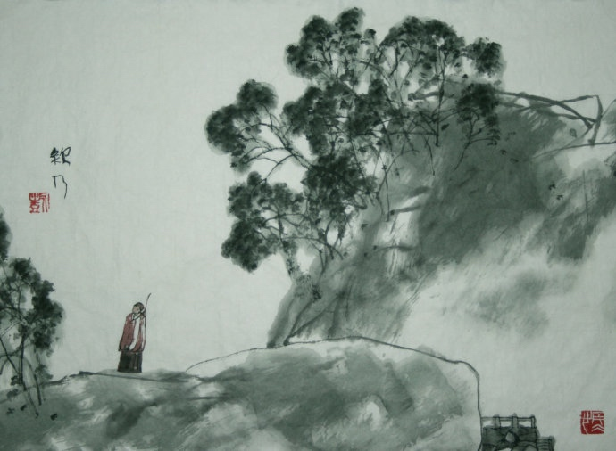
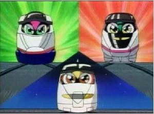

与朋友之间的关系，我有个不是很恰当的比喻，我觉得我们每个人都就好比不同的列车，可能在你的一生中，总会遇到其他的列车，有的会面带笑靥向你迎面走来而转瞬就只能听见风的声音，有的可能会和你并肩前行而慢慢的看着他的背影渐行渐远，我们作为一辆列车的宿命是，终究只能沿着各自的轨道嘶吼着前进，尽管会有无奈。

我一向对于朋友缺乏关心，一者是因为我个人比较内向，不太擅长流露出、甚至于经常会克制自己的感情。二者是我在遇到了问题以后更喜欢自己去解决，而不是碰到了点困难就去求助别人，于我来说，浪费别人的时间和麻烦别人是一件很难接受的事情，虽然我还是经常不得不浪费别人的时间。

内向的人，比别人更敏感和脆弱，更容易感受到自己的情绪，所以更容易自己感动自己？我想大概是的吧。这种情绪我也经历过，很幸运的是，我已经度过这个阶段了。经常会有同学在很偏僻的地方写下一些很感性的内容，我会去看，想说一些鼓励的话，但却忍着不去评论，我知道，每个人都需要一个情绪的出口，文字是不伤害别人最好的方式。但我非常想告诉大家一个残酷的事实就是，尽管每个人都需要得到别人的认可，但是，这个世界永远不会在意你的感受，一个人容易被伤害的本质原因在于：”自己发现自己竟然没有自己想的那么重要”。而当我们尝试想让自己变得重要的时候，会发现，这是很难做到的。因为一个敏感脆弱不坚定的人，是无法让自己变得重要的。所以小波先生会在自己的文章里面写到：”人最本质的痛苦，就是对自己无能的愤怒。”，唯有保持清醒，才能知道自己的价值。

可能我这个人表现的言辞犀利，导致很多朋友都不愿意跟我聊天，关于言辞犀利，虽然有欲盖弥彰的嫌疑，但我还是想简单的解释一下。这么多年来，我一直都在不停的审视自己的缺点，并对自己的缺点加以修正，我知道自己所有的优点和部分缺点。对我来说，有价值的部分是我不知道的缺点。而由此及彼，个体到一般，我便更喜欢坦诚的说出别人的缺点，因为我知道，对一个人成长最有用的一点是：了解自己的缺点。当然，拒绝成长，就可以什么都不做。当然，大多数人所谓的追求进步，也不过是叶公好龙而已。
很多朋友对我的行为买椟还珠，刚开始的时候我对别人的反应觉得很不爽。后来想想，可能追求的事情不一样，很多人说自己想要一个东西，其实并不是真的想要，他只是说说而已，即传说中的：”伪需求”，那何苦要强求别人做我想做的事情，于是便学会了克制。既然大家都喜欢在寒风中围绕着柴火互相取暖而不去点火，我也就不会去强迫别人去做，我觉得只要你开心，你可以接受，内心不矛盾，一切就很OK啦。
我一向都很认同一个观点，就是：如果你想做一件事情，全世界都会给你让路。不信？闯下红灯？借用张小龙的一句话：”我说的都是错的”，如果有什么想做的，不妨尝试一下，”莫听穿林打叶声，何妨吟啸且徐行”。
其它
欢迎扫描二维码订阅我的微信公众号